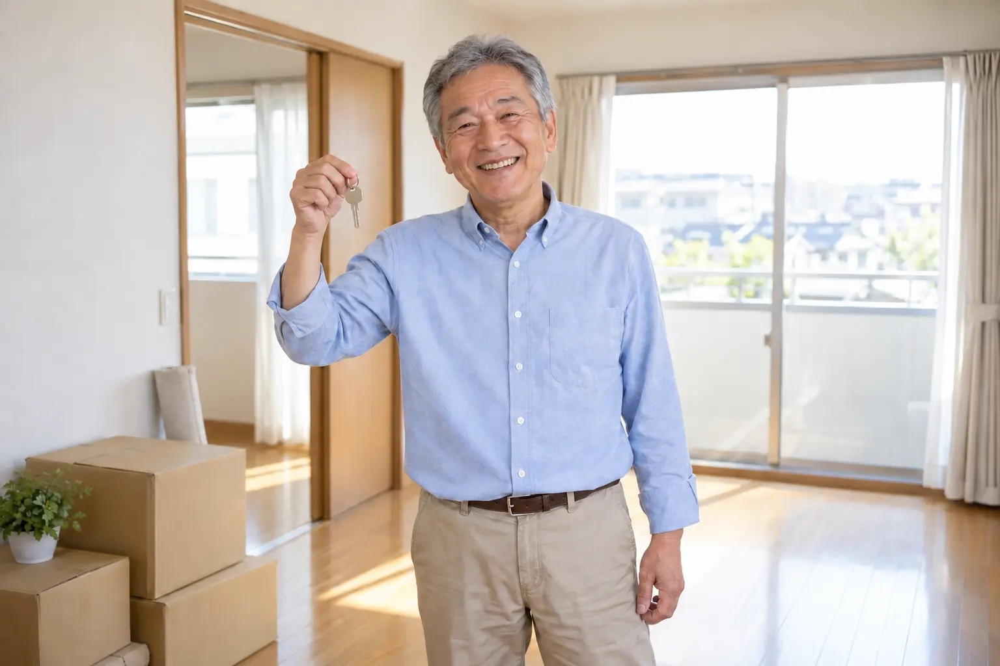
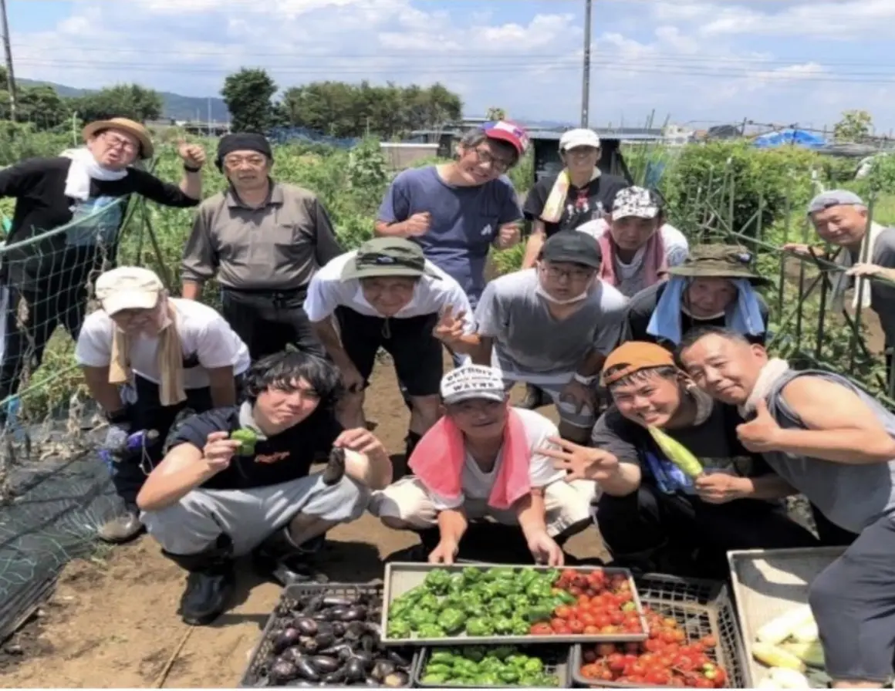

住居確保・入居調整支援
相談初期の段階で住まいを失う期間をできるだけ短くするために、制度活用を含めた入居調整と生活基盤の確保を支援します。
- 緊急性を踏まえた住居選定
- 住居確保給付金等の活用確認
- 入居を受け入れる住宅の情報提供・相談支援
- 入居時の実務手続き支援
- 生活開始直後の初期定着支援

Support
住まいの提供にとどまらず、尊厳を守りながら生活全般を支える包括支援を行います。
相談初期の段階で住まいを失う期間をできるだけ短くするために、制度活用を含めた入居調整と生活基盤の確保を支援します。

専門スタッフが定期面談を行い、生活の困りごと、再発への不安、孤立しやすい状況を一緒に整理します。
日々の活動や地域との交流を通して、自分の役割や居場所を見つけられるよう支えます。ご家族には、相模原ダルクが月1回開催する家族会などもご案内します。
就労支援機関と連携し、仕事探しから就労後の定着まで継続的に支えます。
代表の田中は相模原ダルクの代表も務め、10年以上にわたり一般就労への接続に取り組んでいます。本人の希望や体調を確認し、ハローワークや外部の就労支援機関とも連携します。
相模原ダルクの指定障害福祉サービスでは、弁当・惣菜の販売や無農薬農業などを通じて就労に向けた準備を行っています。当社はそれらの活動や支援機関へつなぎ、本人に合う働き方を一緒に考えます。

医療機関、福祉事務所、保護観察所、自治体窓口等と連携し、担当する役割を確認し、必要な支援が途切れないよう調整します。
あなたとお子さんの安全を、最優先に。
「家に戻るのが怖い」「子どもと安全な場所へ避難したい」「これからの生活が分からない」。うまく説明できなくても、話せることからご相談ください。
ルミライズは、ご本人の意思と安全を大切にしながら、行政・DV専門相談窓口・シェルター等と連携し、避難先の調整から、その後の住まいと生活の再建まで支援します。
安全に連絡できる方法や時間帯を確認し、居場所などの情報の取り扱いにも配慮します。
一時的な住まいや当日の受け入れについては、安全面・空き状況・必要な手続きを確認し、関係機関と調整して個別にご案内します。
外部の専門相談：DV相談プラス 0120-279-889（電話24時間）。地域の窓口はDV相談ナビ #8008（各窓口の受付時間内・通話料あり）。
LGBTQ+当事者、外国人労働者・外国人住民等の方々に対し、文化や制度の違いを踏まえた住まいを整えることから支援します。
日本語・英語・韓国語・タガログ語・タイ語に対応しています。通訳・同行にも対応します。ご希望の言語・日時を受付時間内にご相談ください。担当者の配置に合わせて調整します。その他の言語についてもご相談ください。
入居後3か月・6か月・1年・2年の面談で、暮らしの変化に合わせて支援を見直します。利用できる制度は公的支援プランをご覧ください。
CHILDREN & FAMILIES
子育てや家庭の悩み、子どもの生活・学びの困りごともご相談ください。家庭の事情や本人の意思を尊重し、学校・行政・福祉などの関係機関と、必要な範囲で連携します。
夜間を含む入居者向けの緊急連絡方法は、利用時に個別にご案内します。新規の電話相談は月〜金 10:00〜17:00／土曜・祝日 10:00〜13:00（日曜休業）に受け付けています。
SUPPORT TOGETHER
入居前に必要なことを整理し、暮らしが始まってからも相談できる関係を大切にします。
住まい、費用、生活、言葉の不安など、分かる範囲でお話しください。ご本人だけでなく、ご家族や支援機関からの相談も受け付けています。
空き状況、生活環境、支援の範囲、必要な費用を確認します。一般住宅への支援とナイトケアハウスでは契約や料金が異なります。
料金・利用条件を見る生活の相談を受け、本人の希望と状況に応じて医療・福祉・就労などの窓口と連携します。ナイトケアハウスでは入居者への24時間の支援体制を確保しています。